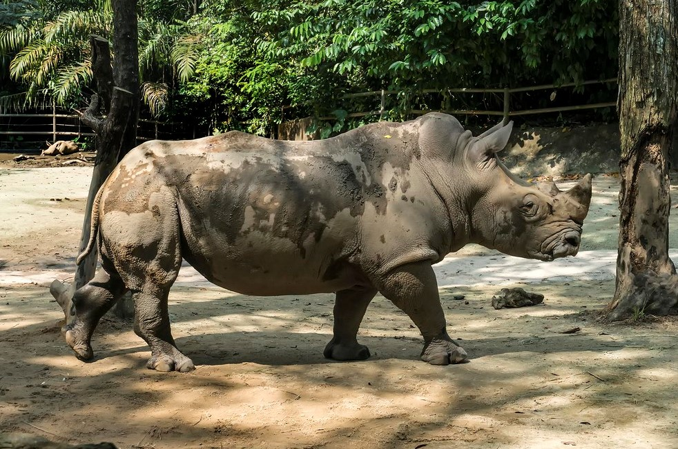
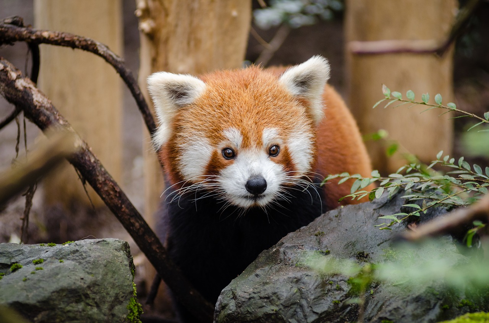
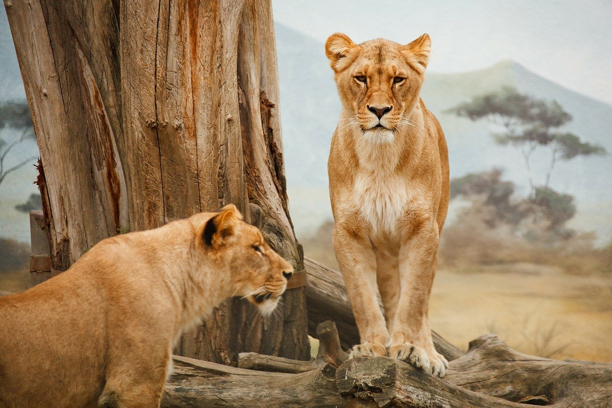
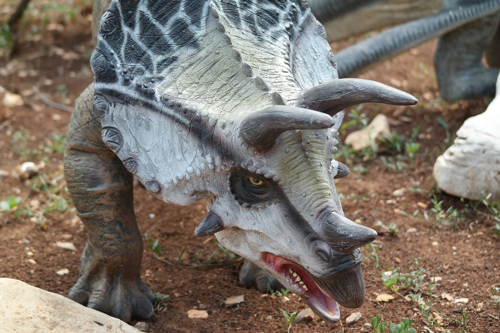

Animali esotici, fattoria di campagna e parco di divertimenti. Tutto questo è la Città della Domenica, un parco di oltre 45 ettari alle porte di Perugia, da visitare a piedi o a bordo dello storico trenino per raggiungere le varie attrazioni: la fattoria dove i bambini possono mungere le mucche, il villaggio di Pinocchio, il Far West, il Canyon, mentre lungo i viali si possono incontrare daini, mufloni e scoiattoli, oltre a specie protette come asini bianchi, canguri, renne, struzzi, yak, oltre ai simpatici "marà", le lepri della Patagonia.
Costo d'Ingresso: €16 intero, €12 ridotto Nato come struttura chiusa, il Parco Zoo La Falconara che si estende per circa 60mila mq su una collina di Falconara Marittina (An), si è in seguito dedicato alla creazione di ambienti per la salvaguardia di specie in pericolo di estinzione che qui si sono recentemente riprodotte, come i 3 cuccioli di leone nati di recente. Passeggiando per il parco infatti, si incontra l'area dei ghepardi con la piramide trasparente che consente un originale punto di osservazione, le scimmie ragno e puma, tigri, giraffe, leoni, lemuri, capibara, gibboni dalle mani bianche e tanti altri animali tra cui anfibi come la rana pomodoro e la rana verde minore. Intorno al laghetto vivono anche molte specie di volatili, dalla cicogna nera all'avvoltoio collorosso, dal fenicottero rosa all'oca egiziana. Da non perdere il rettilario con iguane, pitoni, testuggini e gechi.
Costo d'Ingresso: €12 intero, €10 ridotto Il Safari di Ravenna, in località Mirabilandia, è un percorso di 4 km a bordo della propria auto o del trenino che permette di vedere gli animali da vicino senza barriere. Nei circa 35 ettari di terreno si possono incontrare esemplari di leoni, tigri, ippopotami, giraffe, zebre, bisonti, cammelli, struzzi, lama, antilopi e tante altre specie. Molto divertente da esplorare anche l’Isola dei Babbuini: un ambiente creato ad hoc per queste scimmie, in cui si può entrare a bordo del trenino a rotaia per essere letteralmente immersi nel loro mondo, ma in totale sicurezza. Tutti gli animali si muovono in libertà negli ampi spazi del parco, liberi di avvicinarsi ai visitatori e di vivere in sicurezza e benessere grazie alle cure e attenzioni dei rangers e alla loro abitudine alla presenza umana. Oltre allo zoo safari c’è la fattoria didattica, un’area con spazi recintati in cui è possibile camminare a piedi tra gli animali autoctoni più comuni, come mucche, pecore, capre, galline, pony e cavalli, ma anche bellissimi esemplari di tartarughe leopardo provenienti dall’Etiopia o di capre tibetane.
Costo d'Ingresso: €25 intero, €21 ridotto Un Jurassic Park a 25 km da Milano. Il parco della preistoria di Rivolta d’Adda (MI) è un percorso naturalistico di oltre 100 ettari dove si possono ammirare da vicino 27 ricostruzioni a grandezza naturale di animali della preistoria, tra i quali il Saltriosauro, il più grande dinosauro carnivoro italiano lungo circa 8 metri. Nel parco ci sono anche tanti animali in libertà tra cui piccoli mammiferi come conigli selvatici, scoiattoli, ghiri, volpi, tassi, ricci, ma anche pavoni, cerbiatti e innumerevoli specie di insetti e uccelli, inoltre anfibi come rane, rospi, salamandre, rettili e lucertole. Un percorso da esplorare con visita guidata, a piedi o in bicicletta.
Costo d'Ingresso: €12 intero, €9 ridotto 